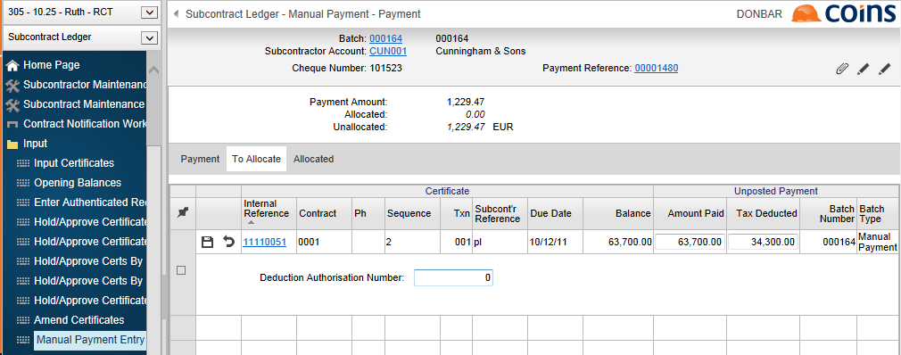

To make a manual payment under RCT:
- Notify the payment on ROS.
- Go to:
- Manual Payment Entry
or
- Manual Payments
- Enter the payment batch in the usual way.
- Enter the payment in the usual way.
- On the To Allocate tab, click
 to enter the author
to enter the author - Enter:
- Deduction Author
- Actual Tax Amount (defaults from the tax amount on the transaction - you will need to amend this to agree with the figure you have obtained from ROS).
- Amount Paid which defaults from the net payment on the transaction. You will need to amend this if you have amended the Actual Tax Amount.

- Deduction Author
-
Click
 .
.
NOTES
You will not be able to allocate payments to certificates for subcontracts that fail the RCT validation (for example, contract not notified or notification expired).
You cannot use the Pay Certificates action to mark certificates as paid if you need to enter notification details for them. You can only use the Pay Certificates action for certificates that do not require notification; see eRCT - Making Payments.